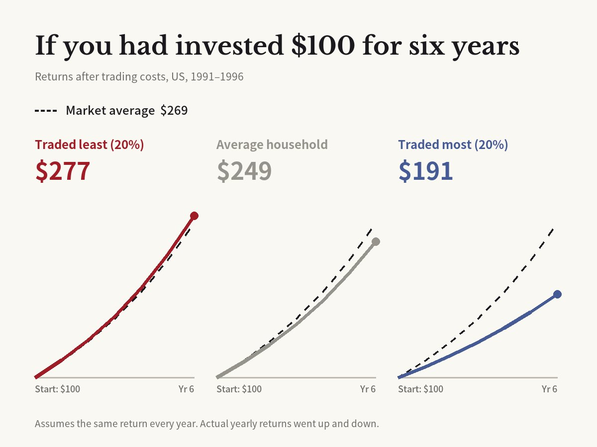

The investors who traded the least earned the most: what 66,465 households taught us about trading
Brad M. Barber, Terrance Odean · Journal of Finance, 2000

01Inside 66,465 accounts
Professors Brad Barber and Terrance Odean of the University of California, Davis business school got the records of 66,465 households at a large US discount broker. The data showed which stocks each household bought and sold, and when, over six years from 1991 to 1996.
They split the households into five groups by how often they traded. After costs, the 20% who traded most earned 11.4% a year. The whole market earned 17.9% a year over the same time. The 20% who traded least earned 18.5%, close to the market.
The average household earned 16.4%, also below the market. It replaced more than 75% of its stocks each year. The busiest group turned over more than 250% a year, swapping its whole portfolio more than twice. The paper ran in the Journal of Finance in 2000, and its title is its conclusion: trading is hazardous to your wealth.

02Most of the gap was costs
The key number is the return before trading costs. Before costs, households that traded often and households that rarely traded did about the same. The average household earned 18.7% before costs, close to the market.
Costs made the difference. Buying and then selling a trade worth over $1,000 cost about 3% in commissions and about 1% in the gap between buying and selling prices. The more people traded, the more these costs added up.
The authors blame the average household's poor results on the cost of frequent trading. In simple returns, the stocks rose with the market, but every trade took a slice of the gains. Still, once their tilt toward small, risky stocks is taken into account, the busiest 20% trailed the market by about 4 points a year even before costs. After costs, the gap grew to 10.3 points.
03Why keep trading at a loss?
Taxes or sudden cash needs can't explain turning over 250% a year. The authors point to overconfidence: people trust their own information and judgment more than they should, and they trade too much.
A year later they tested this idea another way. Psychology research suggests men tend to be more confident about money, so they split more than 35,000 households by gender. Men traded 45% more than women. Trading cut men's returns by 2.65 percentage points a year, compared with 1.72 points for women.
04All of Taiwan, and Korea in 2020
One broker's customers may not be typical, so Barber and Odean later worked with Taiwanese researchers on every trade on the Taiwan Stock Exchange over five years. Individual investors lost an amount equal to 2.2% of Taiwan's GDP, or 2.8% of all personal income. Institutions, by contrast, gained 1.5 percentage points a year from trading.
There is Korean data, too. In a 2022 report, the Korea Capital Market Institute studied the trades of about 200,000 individual investors in 2020. Of them, 60,446 had opened their first account after March 2020. The report also cites earlier work finding that 60% of these new investors lost money, and it points to frequent trading and a taste for lottery-like stocks as drags on returns.
The 2000 paper has been cited more than 3,000 times. It is still a common reason given for buying a cheap index fund and holding it.
05A case for the small investor
Not every study finds that individual investors get it wrong. In 2013, finance professors Eric Kelley (University of Arizona) and Paul Tetlock (Columbia University) published a paper in the same journal using US retail orders. Stocks that individuals bought heavily went up the next month, and the rise did not reverse.
That does not make Barber and Odean wrong. The two studies measured different things. Kelley and Tetlock asked whether the stocks individuals bought heavily actually went up. Barber and Odean asked how much money was left in people's accounts after costs. You can pick stocks that rise and still lose much of the gain to costs if you trade often.
06Limitations
The data come from the US in the 1990s, when commissions were far higher. The Korean report puts the tax and commission on buying and selling Korean stocks in 2020 at about 0.33%, far below the roughly 3% commission in the paper. Lower costs may mean frequent trading hurts less than it did.
The data came from a discount broker, a firm that charges low fees and simply carries out orders without giving advice. Its customers made their own calls, so results may differ for people who invest with advice. Their accounts at other brokers were not seen either. Overconfidence fits the data, but it was not proven by an experiment. The gender comparison may also reflect other differences that go along with gender.
It does not mean every individual investor lost. Figures like 11.4% and 18.5% are averages for each of the five groups, and households within a group did very differently. After costs, 43.4% of households still beat the market, and one in four beat it by more than 6% a year.
Original paper
- Barber & Odean (2000), Journal of Finance 55(2), 773–806, doi:10.1111/0022-1082.00226
- doi.org/10.1111/0022-1082.00226